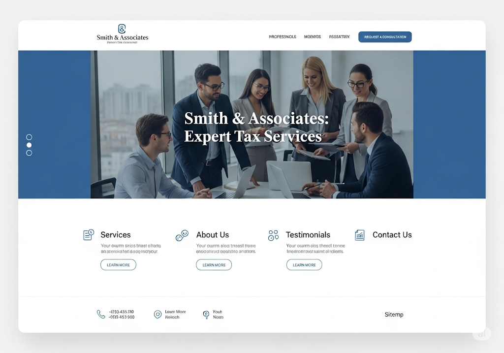
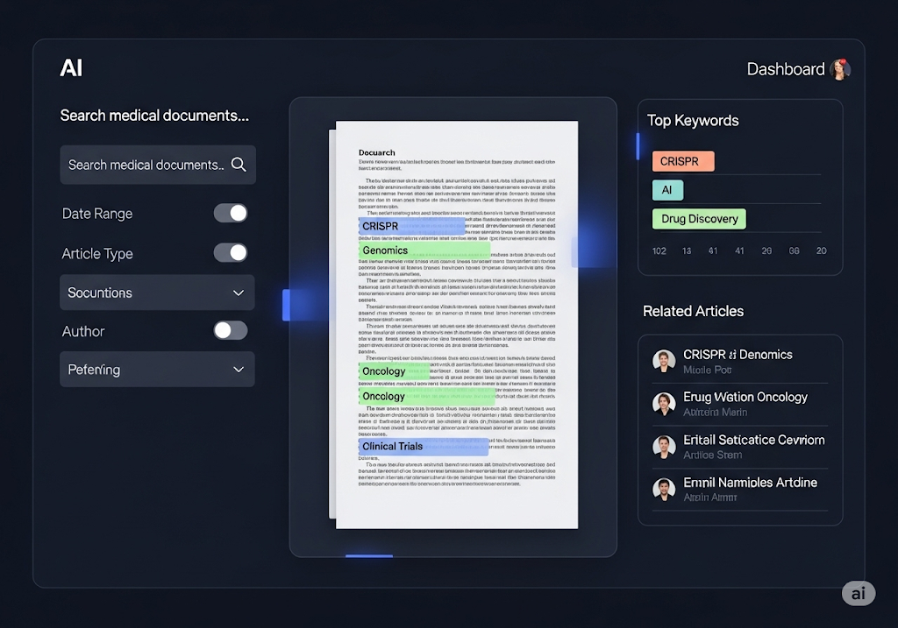
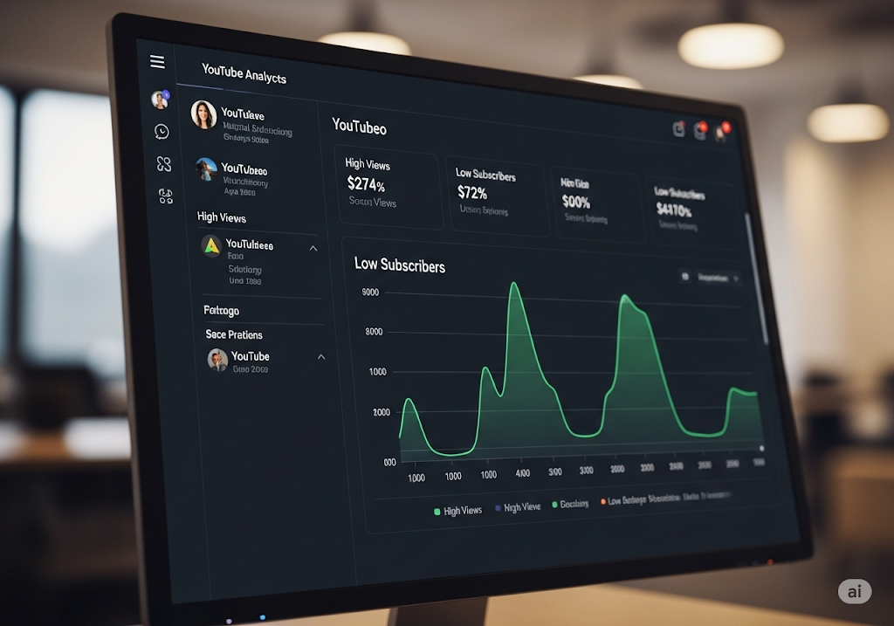

Real-World Case Studies
NomadLabs가 해결한 실제 비즈니스 난제들입니다.

React
Platform & Web
Sejong Tax Corp
Professional Tax Platform
신뢰감을 주는 디자인과 자동 상담 기능을 결합한 프리미엄 세무사 법인 홈페이지 구축.
View Case Study arrow_forward

Computer Vision
Vision AI
BioGen Lab
Auto DNA Fiber Counter
현미경 이미지 내 DNA Fiber의 개수와 길이를 자동으로 측정하는 비전 AI 솔루션.
View Case Study arrow_forward

Scrapy
NLP & RAG
MediSearch Institute
Medical Insight Engine
전 세계 의료 논문 및 임상 데이터를 자동 수집하여 자연어로 검색 가능한 지능형 검색 엔진.
View Case Study arrow_forward

YouTube Data API
Data Analytics
Viral Hunter
Undervalued Video Scout
구독자 수는 적지만 폭발적인 조회수를 기록한 바이럴 영상을 찾아주는 트렌드 분석 툴.
View Case Study arrow_forward

LLM
Automation
Creator Studio
Viral Script Generator
벤치마킹할 영상을 입력하면 해당 스타일을 분석하여 새로운 대본을 작성해주는 AI 작가.
View Case Study arrow_forward

LangGraph
Automation
AutoBiz Corp
Multi-Agent Orchestrator
검색, 분석, 작성 등 서로 다른 역할을 가진 AI 에이전트들이 협업하여 업무를 수행하는 플랫폼.
View Case Study arrow_forward